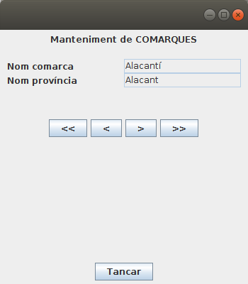

6.2 - ResultSets que poden avançar cap avant i cap arrere
Fins el moment, tots els ResultSet que hem creat podien avançar únicament cap avant, fent un recorregut seqüencial de les dades.
- Inicialment el punter que apunta a l'estructura està situat abans de la primera fila
- En fer next() se situa a la següent fila (la primera vegada se situa en la primera fila)
- Quan estiguem situats en l'última fima, si fem next() se situara després de l'última, i ho indicarà tornant false
Però aquesta manera de funcionar, que es diu TYPE_FORWARD_ONLY i que és l'opció per defecte per a obrir un ResultSet, no és l'única. Aquestos són els tipus de ResultSet que hi ha:
- TYPE_FORWARD_ONLY: és el tipus utilitzat fins el moment, i és el tipus per defecte. El ResultSet només pot avançar cap avant.
- TYPE_SCROLL_INSENSITIVE: El ResultSet pot avançar cap avant i cap arrere, fins i tot pot anar a una posició absoluta (directament, sense passar per les anteriors). El ResultSet no és sensible als canvis fets en les dades que han proporcionat aquest resultat, és a dir, ens mostra les dades que hi havia en el moment d'executar la consulta, sense poder mostrar possibles canvis posteriors.
- TYPE_SCROLL_SENSITIVE: Igual que l'anterior en quant al moviment. Però ara sí que és capaç de mostrar possibles canvies fets en les dades originals posteriors al moment de l'execució de la consulta, mentre el ResultSet estiga obert.
I per una altra banda el ResultSet pot tenir la possibilitat d'actualitzar les dades originals. Des d'aquest punt de vista hi ha 2 possibles tipus:
- CONCUR_READ_ONLY: El ResultSet només és de lectura i no es pot actualitzar
- CONCUR_UPDATABLE: El ResultSet es pot actualitzar (i els canvis es reflectiran en les dades originals) utilitzant el mateix ResultSet
L'opció per defecte és CONCUR_READ_ONLY
Realment on declararem els tipus és en la creació del STATEMENT a partir del qual crearem la sentència que omplirà el ResultSet. És lògic, ja que aquestes maneres de funcionar s'han de preparar abans d'executar la sentència. Fins ara no havíem posat paràmetres en la creació del Statement, cosa que fa que es cree amb les opcions per defecte. Si volem altres opcions:
val st = con.createStatement(ResultSet.TYPE_SCROLL_INSENSITIVE,ResultSet.CONCUR_READ_ONLY)
val st = con.createStatement(ResultSet.TYPE_SCROLL_SENSITIVE,ResultSet.CONCUR_UPDATABLE)
La primera qüestió que hem de comentar és que el SGBD ha de ser capaç de suportar els tipus que no són per defecte, i no sempre és així. Mentre que PostgreSQL, Oracle i MySQL sí que són capaços de suportar tots els tipus anteriors, SQLite no ho pot fer i tan sols suporta TYPE_FORWARD_ONLY i CONCUR_READ_ONLY, com era d'esperar.
Deixant de banda la possibilitat de reflectir els possibles canvis de les dades originals (SENSITIVE), i de poder actualitzar-les (CONCUR_UPDATABLE), anem a estudiar els possibles moviments dins del ResultSet.
- next: Avança una fila cap avant. Torna true si s'ha pogut posicionar, i false si no s'ha pogut posicionar, per estar després de l'última fila.
- previous: Avança una fila cap arrere. Torna true si s'ha pogut posicionar, i false si no s'ha pogut posicionar, per estar abans de la primera fila.
- first: Se situa en la primera fila. Torna true si s'ha pogut posicionar, i false si no s'ha pogut posicionar, per no contenir el ResultSet cap fila.
- last:: Se situa en l'última fila. Torna true si s'ha pogut posicionar, i false si no s'ha pogut posicionar, per no contenir el ResultSet cap fila.
- beforeFirst: Se situa al principi del RecordSet, abans de la primera fila. Si no hi havia cap fila, no fa res.
- afterLast: Se situa al final del RecordSet, després de l'última fila. Si no hi havia cap fila, no fa res.
- relative(int files): Meneja el cursor respecte de la posició actual, tantes files com s'indica en el paràmetre (si el paràmetre és negatiu, anirà cap arrere).
- absolute(int fila): Situa el cursor en la fila especificada en el paràmetre (1 és la primera)
El següent exemple es practica anar a la primera, a l'anterior, a la següent i a l'última fila.
Copieu el següent codi en un fitxer Kotlin anomenat Exemple_4_41_Scroll.kt:
package exemples
import javax.swing.JFrame
import javax.swing.JLabel
import javax.swing.JTextField
import javax.swing.JButton
import javax.swing.JPanel
import java.awt.FlowLayout
import java.awt.GridLayout
import java.awt.BorderLayout
import java.awt.EventQueue
import java.sql.DriverManager
import java.sql.ResultSet
class Exemple_4_41_Scroll : JFrame() {
val nomComarca = JTextField()
val nomProvincia = JTextField()
val primer = JButton("<<")
val anterior = JButton("<")
val seguent = JButton(">")
val ultim = JButton(">>")
val tancar = JButton("Tancar")
val pDalt = JPanel(FlowLayout())
val pCentre = JPanel(GridLayout(8, 0))
val pDades = JPanel(GridLayout(2, 2))
val pBotonsMov = JPanel(FlowLayout())
val pTancar = JPanel(FlowLayout())
val con = DriverManager.getConnection("jdbc:postgresql://89.36.214.106:5432/geo_ad", "geo_ad", "geo_ad")
val st = con.createStatement(ResultSet.TYPE_SCROLL_INSENSITIVE, ResultSet.CONCUR_READ_ONLY)
val rs = st.executeQuery("SELECT * FROM COMARCA ORDER BY 1")
init {
defaultCloseOperation = JFrame.EXIT_ON_CLOSE
setBounds(100, 100, 350, 400)
setLayout(BorderLayout())
getContentPane().add(pCentre, BorderLayout.CENTER)
getContentPane().add(JPanel(FlowLayout()), BorderLayout.WEST)
getContentPane().add(JPanel(FlowLayout()), BorderLayout.EAST)
getContentPane().add(pTancar, BorderLayout.SOUTH)
pDalt.add(JLabel("Manteniment de COMARQUES"))
pCentre.add(pDalt)
pDades.add(JLabel("Nom comarca"))
pDades.add(nomComarca)
pDades.add(JLabel("Nom província"))
pDades.add(nomProvincia)
pCentre.add(pDades)
nomComarca.setEditable(false)
nomProvincia.setEditable(false)
pCentre.add(JPanel(FlowLayout()))
pBotonsMov.add(primer)
pBotonsMov.add(anterior)
pBotonsMov.add(seguent)
pBotonsMov.add(ultim)
pCentre.add(pBotonsMov)
pTancar.add(tancar)
rs.first()
visComarca()
primer.addActionListener {
rs.first()
visComarca()
}
anterior.addActionListener {
if (!rs.isFirst())
rs.previous()
visComarca()
}
seguent.addActionListener {
if (!rs.isLast())
rs.next()
visComarca()
}
ultim.addActionListener {
rs.last()
visComarca()
}
tancar.addActionListener{
rs.close()
st.close()
con.close()
System.exit(0)
}
}
fun visComarca() {
nomComarca.setText(rs.getString(1))
nomProvincia.setText(rs.getString(2))
}
}
fun main(args: Array<String>) {
EventQueue.invokeLater({ Exemple_4_41_Scroll().isVisible = true })
}Aquest és el resultat:

Llicenciat sota la Llicència Creative Commons Reconeixement CompartirIgual 2.5